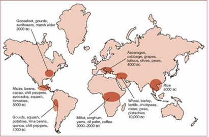
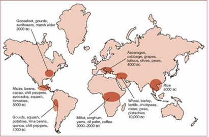

Wat is het Neolithicum?
Historisch kader
Om een duidelijk overzicht te hebben is belangrijk dat we weten waar en wanneer het zich afspeelde. De oudste resten van landbouw dat gevonden zijn
dateren terug tot ongeveer 10 000 v.C. Die resten zijn te vinden in of te wel de vruchtbare sikkel of 6 andere onafhankelijke gebieden die te zien zijn op de afbeelding.
Waarom de vruchtbare sikkel?
Maar waarom bij de vruchtbare sikkel en niet op een of andere plek? Omdat er van de 65 soorten planten die geschikt zijn voor domesticatie*, er 32 te vinden zijn in de vruchtbare sikkel. Ook waren er goede gronden voor
de landbouw en kwamen er grote kudden geiten en schaap voor. De andere onafhankelijke gebieden bezitten ook deze eigenschappen maar niet in dezelfde mate en oppervlakte.
 

Domesticatie
Domesticatie* : Domesticatie is het proces waarbij de mens dieren en planten selectief fokt en kweekt, waardoor deze steeds meer aangepast worden aan menselijke behoeften. (Wikipedia-bijdragers, 2025)
Verandering van levensstijl
Zoals eerder vermeld leefde men voor meer dan 2 miljoen jaar van jacht, visvangst, het vinden van aas en het verzamelen van vruchten en planten. Men leefde ook niet op 1 plek, maar zwerfde constant rond. Ook wel beken als een nomadische levensstijl. Maar op een gegeven vond er een verandering plaats waarbij besloot om aan landbouw te beginnen doen. Planten en dieren zouden dus gedomesticeerd worden. Men begon de grond te bewerken, planten te planten, dieren te verzorgen en te kweken. Agressieve dieren werden gedood en de tamme dieren mochten blijven leven. Dit staat ook wel bekend alss natuurijke selectie. De dieren werden als gevolg afhankelijk van de mens en er was dan sprake van domesticatie.